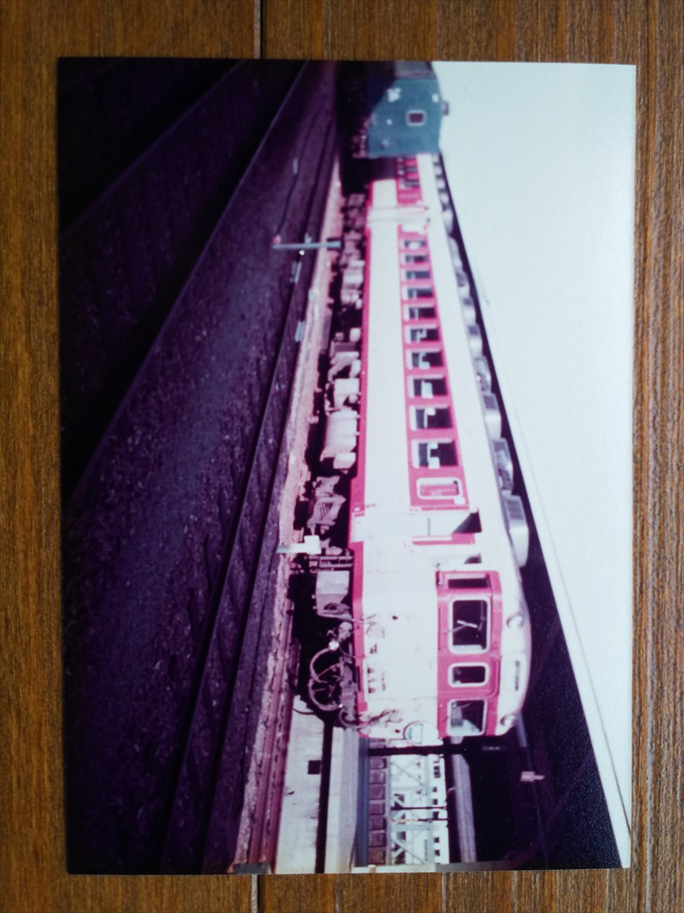
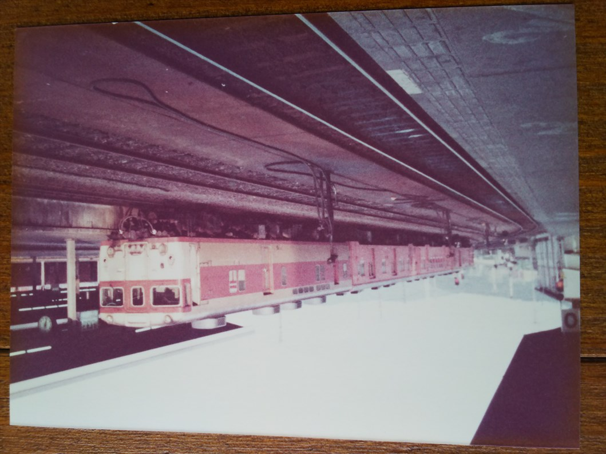
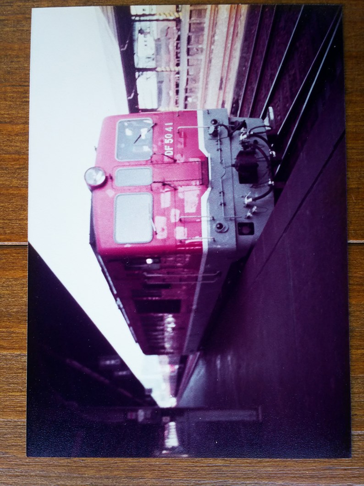

といってもお金が全然なく、夜行で出かけて翌日帰ってくるという、２４時間かかってないものでした。
でもこの旅が私の旅人生の始まりなんよね。行先が、このあと約２５年後から１７年にわたってお世話になる出張先の高松やったのも、人生を
暗示してるような・・・
阪神で青木駅まで行き、今は袖岡さんお気に入りの模型屋がある所にあったフェリー乗り場から、夜行のフェリーに乗り、翌朝４時頃、高松
東港に到着。そこからはタクシーで高松駅へ。生まれて初めて一人でタクシーに乗ったので結構緊張して、８００円ぐらいやったのを全部小
銭で払ったのを運ちゃんから文句言われへんか不安やったのを覚えてます。
高松に着いて、まずは高松築港駅をのぞいたら元阪神車が停まってた記憶が残ってるのですが、写真は残ってませんでした。暗すぎたのか、
元阪神車ごときにフィルムを使うのがもったいなかったのか、どっちやろ・・・
いよいよ高松駅の入って撮影開始。
四国の急行は丸いヘッドマークがついてたので、撮
り甲斐がありました。
急行いよ。予讃線の急行ですね。
急行あしずり。こちらは土讃線の急行ですね。
じゃじゃ～ん！これですよ、これ！
この当時、四国にのみ残っていたＤＦ５０っす。

これの撮影が、今回の旅の最大の目的でした。
今から考えたら、多度津まで行けばもっとうようよ
してたと思うのですが、そんな知恵も情報もなく・
・・
高松におったらなんぼでも来るやろと思ってたら、
なかなか来ず、やっと巡り合った時は大喜びした記
憶があります。
ええフォルムやわ。

なぜかここからカラー。
急行うわじま、かな？
当時の四国のエースの並びです。多分寝台特急瀬戸
→宇高連絡船を受けての予讃線のしおかぜ、土讃線
の南風です。
当時の高松駅の雰囲気が良く出てる、お気に入りの
写真。
こう見ると、四国には１８１系がよく似合ってたと
思う。
急行土佐。土讃線の急行ですね。

最初の写真とほぼ同じですが、時計の時間が違うの
で別列車ですね。１両目はキユニかな。
高徳線ホームに停まってる急行阿波。
高徳線には特急は走ってなく、高松徳島ノンストッ
プの急行が走ってましたね。
頭端式やった高松駅の付け根側から。キハ５５も健
在やったんやね。
牟岐線まで行ってた急行むろと。これなんか、岩佐
模型店の店主にはおなじみではないでしょうか？
もういっちょ、ＤＦ５０がやって来てくれました。
ＤＥ１０らしき機関車もつなげた、変わった編成で
すね。

動いてるＤＦ５０を見た、最初で最後の日でした。
もういっちょ、急行土佐を。
この頃は、鈍行も５０系がかなり進出してますね。
どのタイミングでホームから出たのか、高松築港駅
近辺でも撮影してます。
邪魔なおっさんや。
このあたりの風景は全然変わってません。
なぜこの時、瓦町に行かなかったのか、今となって
はかなり後悔してますが、この時は琴電のすごさを
いまいちわかってなかったと思います。
今は志度線の電車が築港まで来ることはあり得ないので（線路がつな
がってない）、貴重な志度行きです。
高松から高徳線に乗って徳島へ。もちろん鈍行で。
途中乗り合わせたヤンキーっぽい高校生の男女に話
かけられたのは良く覚えてます。からまれたという
わけではなく、気のいい人たちでした。
もしかしたら、仕事で遭遇してたりして。
これが乗って来た鈍行かどうか、記録なし。
急行よしの川。徳島線の急行かな。
そう、この後は廃止の決まっていた小松島港線で小松島港に向かいまし
た。
金もないのに急行乗るわけないので、確か徳島から先は普通になってた
と思います。
小松島港。ちくわ売りが有名でしたが、写真に写っ
てませんね。
土産にちくわを買ったのに、肝心のちくわをもらわ
ずにフェリーに向かって行って、おばちゃんに大き
な声で、忘れてるよって言われたのは良く覚えてま
す。
このあとはもちろんフェリーで和歌山まで戻って、
南海の特急で帰りました。
なんと充実した２４時間や！